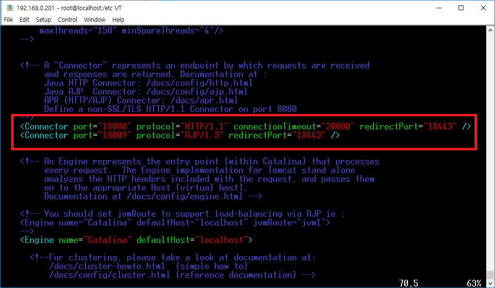
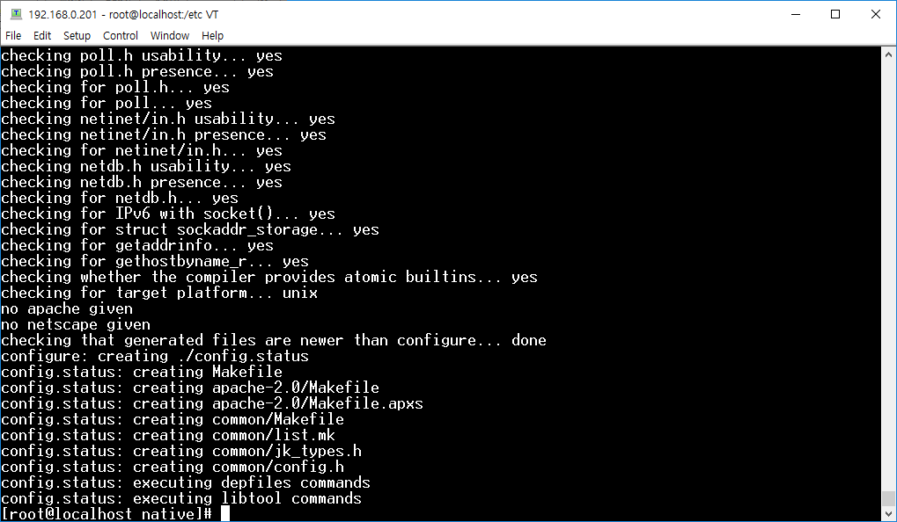
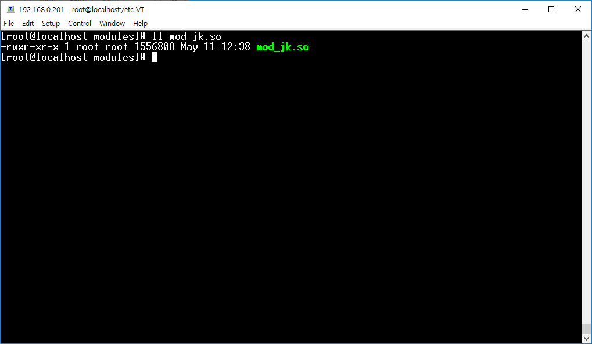
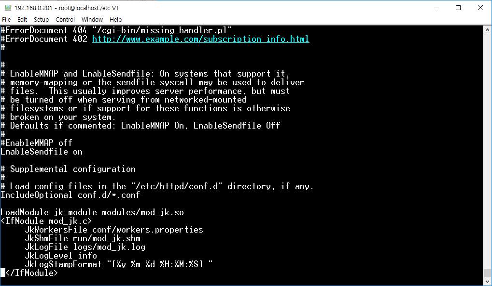
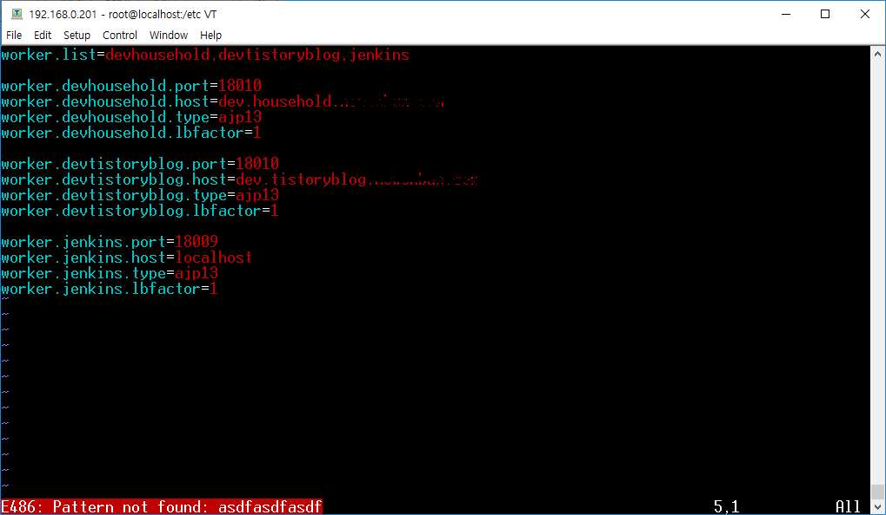
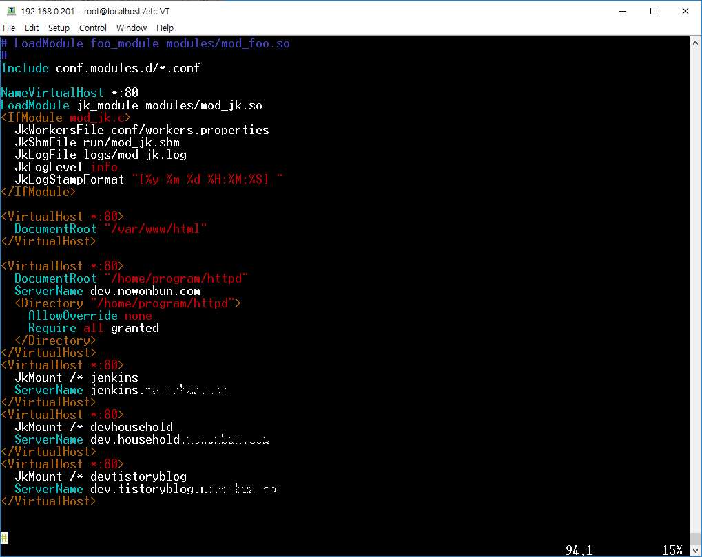
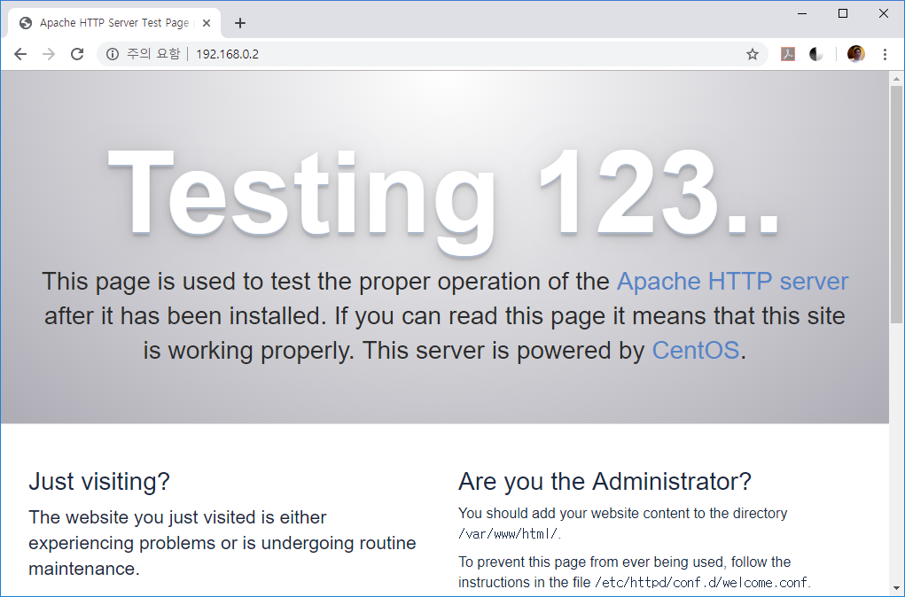
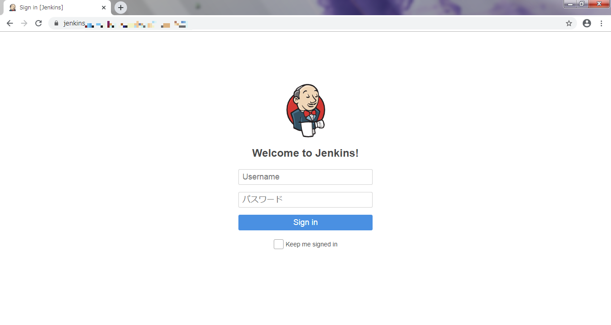
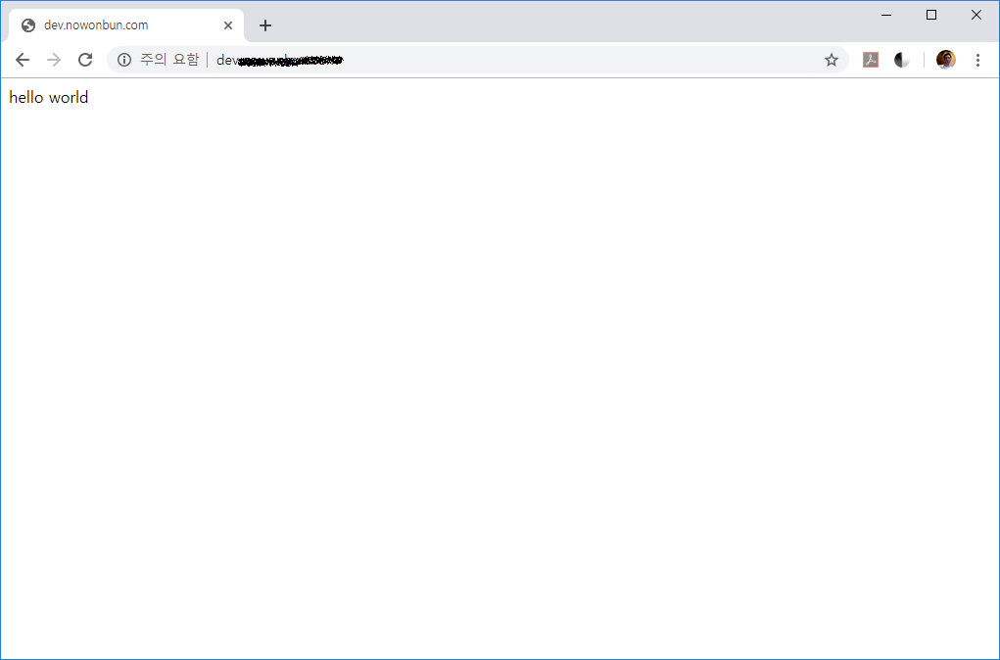

[CentOS] ApacheとTomcatの連携
こんにちは。明月です。
前述でCentOSでapacheとtomcatをインストールしました。
先にtomcatの場合は独立でウェブサーバで運用できますが、なぜ別で「apache」をインストールして「tomcat」を連携するのかは「tomcat」は確かにウェブサーバの機能がありますが、「apache」よりロードバランシングや仮想機能が落ちています。
最近、バージョンが「9.x」まで上がって性能が以前よりは良くなりましたが、それでも分ける方がよいですね。
筆者の場合はサーバで「java」だけではなく、jsp、phpなど混在してプログラミングするタイプなので、「apache」の「virtual host」機能をよく使うので、「tomcat」のサーバの一つだけではなく、様々な「tomcat」かつ一つの「apache」を紐付いて使っています。
それで、「apache」と「tomcat」を連携しましょう。

先、「tomcat」にはhttpポートを設定してブラウザと通信するHTTPプロトコル領域があります。または、「ajp」プロトコルという「apache」と通信するポートがあります。
「apache」と「tomcat」を連携するようにはこの「ajp」プロトコルを利用しましょう。
「apache」側で「ajp」プロトコルを使うようには「mod_jk」がインストールされなければならないです。
mok_jk - https://tomcat.apache.org/download-connectors.cgi
wget http://ftp.tsukuba.wide.ad.jp/software/apache/tomcat/tomcat-connectors/jk/tomcat-connectors-1.2.46-src.tar.gz
yum install gcc gcc-c++ httpd-devel #依存性ライブラリ
tar zxvf tomcat-connectors-1.2.46-src.tar.gz
圧縮を解凍したらこれからコンパイルをしなべきです。「native」フォルダにいきましょう。
cd tomcat-connectors-1.2.46-src
cd native/
./configure --with-apxs=/usr/bin/apxs

make
make install
「/etc/httpd/modules」フォルダで「mod_jk.so」ファイルがあれば、コンパイル成功です。

そして「httpd.conf」に行って下記とおりに設定しましょう。
<IfModule mod_jk.c>
JkWorkersFile conf/workers.properties
JkShmFile run/mod_jk.shm
JkLogFile logs/mod_jk.log
JkLogLevel info
JkLogStampFormat "[%y %m %d %H:%M:%S] "
</IfModule>

その後、「workers.properties」を作成しましょう。筆者の場合は「jenkins」とウェブサーバがあるので２つで設定しました。
worker.list=devhousehold,devtistoryblog,jenkins
worker.devhousehold.port=18010
worker.devhousehold.host=dev.household.nowonbun.com
worker.devhousehold.type=ajp13
worker.devhousehold.lbfactor=1
worker.devtistoryblog.port=18010
worker.devtistoryblog.host=dev.tistoryblog.nowonbun.com
worker.devtistoryblog.type=ajp13
worker.devtistoryblog.lbfactor=1
worker.jenkins.port=18009
worker.jenkins.host=jenkins.nowonbun.com
worker.jenkins.type=ajp13
worker.jenkins.lbfactor=1

また「httpd.conf」を下記とおりに追加しましょう。
<VirtualHost *:80>
DocumentRoot "/var/www/html"
</VirtualHost>
<VirtualHost *:80>
DocumentRoot "/home/program/httpd"
ServerName dev.nowonbun.com
<Directory "/home/program/httpd">
AllowOverride none
Require all granted
</Directory>
</VirtualHost>
<VirtualHost *:80>
JkMount /* jenkins
ServerName jenkins.nowonbun.com
</VirtualHost>
<VirtualHost *:80>
JkMount /* devhousehold
ServerName dev.household.nowonbun.com
</VirtualHost>
<VirtualHost *:80>
JkMount /* devtistoryblog
ServerName dev.tistoryblog.nowonbun.com
</VirtualHost>

そしてそれぞれのディレクトリに「apache」権限を与えます。
chown -R apache:apache /home/program/httpd



- [Ubuntu] PHPをインストール、Composer設定する方法2019/11/13 07:32:21
- [Ubuntu] テーマ(Arc)を変更する方法(tweak)2019/11/12 07:32:13
- [Ubuntu] Apache2をインストールする方法2019/11/11 07:28:28
- [Ubuntu] 「acquire the dpkg frontend lock」のエラーを解決方法2019/11/10 22:19:34
- [Ubuntu] JavaインストールとEclipseをインストールする方法2019/11/08 07:29:55
- [Ubuntu] MariaDB(Mysql)をインストールする方法2019/11/07 07:50:58
- [Ubuntu] Chromeをインストールする方法2019/11/06 19:48:19
- [CentOS] YUMについて、YUMが出来ない場合処理方法2019/11/05 07:17:58
- [CentOS] MariaDB(Mysql)をインストール2019/11/04 18:35:10
- [CentOS] FTPインストールする方法(vsftpd)2019/11/01 07:29:57
- [CentOS] SAMBAインストール方法2019/10/30 07:38:57
- [CentOS] PHPインストールする方法2019/10/29 20:09:03
- [CentOS] ApacheとTomcatの連携2019/10/29 07:28:33
- [CentOS] Tomcat インストール方法2019/10/28 22:38:56
- [CentOS] Java インストール2019/10/28 00:22:32
- [Python] 02. データタイプ、変数宣言そしてコメントする方法2020/05/26 18:16:52
- [Python] 01. Python3をインストールする方法(Anacondaインストール)2020/05/25 19:02:44
- [Java] HttpConnectionを利用してウェブページを取得する方法2020/05/20 23:53:24
- [Java] Jsoupを利用してXMLファイル(HTML)を扱う方法2020/05/19 19:32:21
- [C#] 非同期ソケット通信(IOCP)-APMパターン2020/05/18 18:45:37
- [C#] 非同期ソケット通信(IOCP)-EAPパターン2020/05/15 19:31:02
- [C#] ソケット(Socket)通信をする方法2020/05/13 17:37:13
- [C#] NPOIを利用してExcelを読み込んで出力する方法2020/05/08 10:43:52
- [C#] NPOIライブラリを利用してエクセルファイルを生成する方法2020/05/07 01:49:01
- [C#] Geckoライブラリを利用してウェブスクレイピングする方法2020/05/05 00:52:26
- [C#] PDFを作成する方法(iTextSharp)2020/05/03 10:22:40
- [C#] シリアライズ(Serialization)をする方法2020/04/30 19:32:04
- [C#] dynamicタイプの動的パラメータ-DynamicObject(WinFormでASP.MVCのViewBagオブジェクトを使用する方法)2020/04/29 22:41:32
- [C#] Stringの補間式(interpolation)2020/04/27 20:39:57
- [C#] Newtonsoft.JSONライブラリを利用してJsonデータ構造を扱う方法2020/04/23 20:19:53